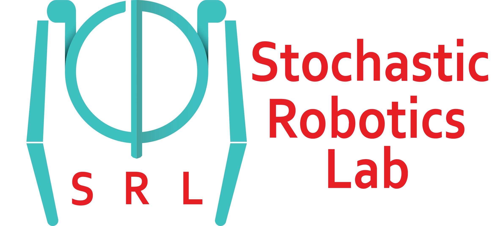
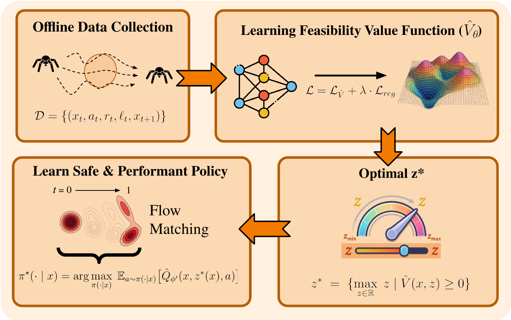
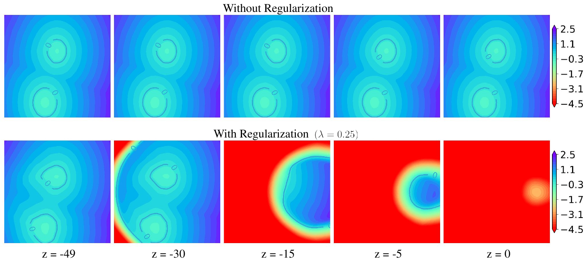
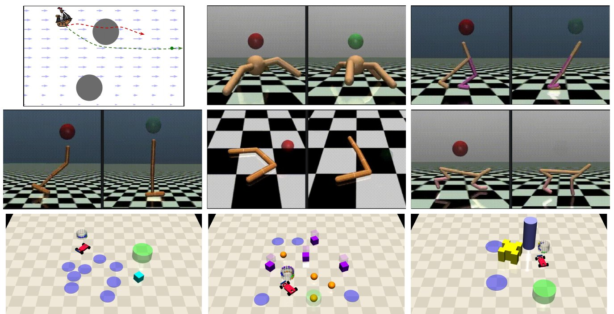
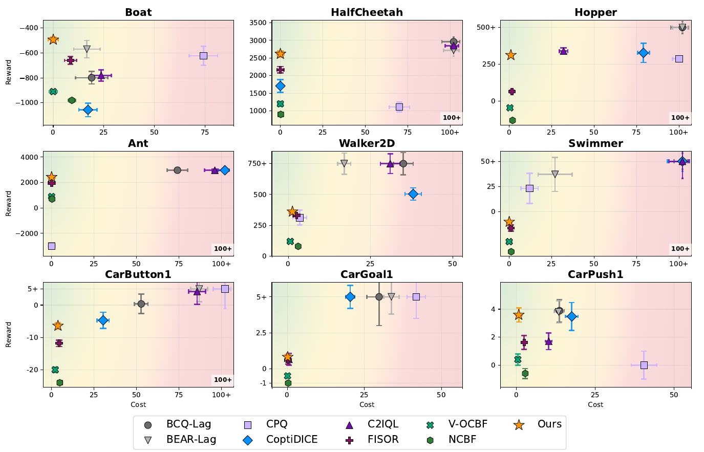
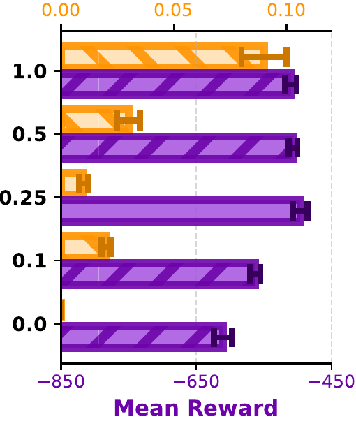
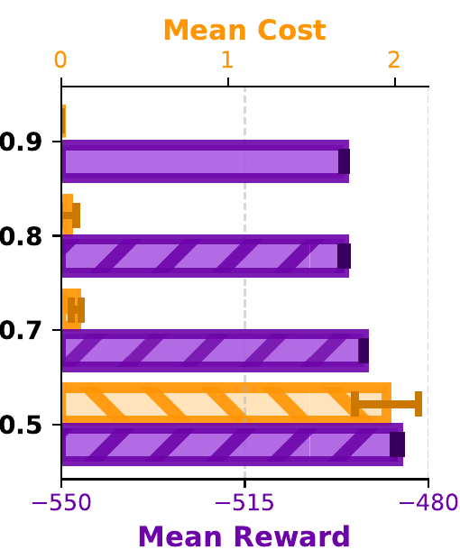
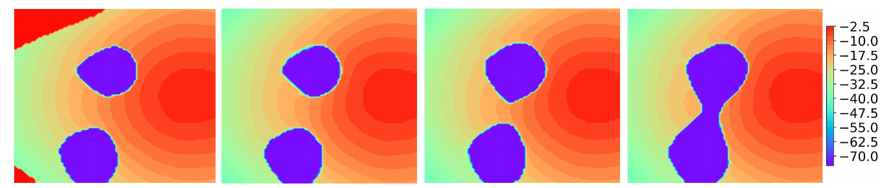
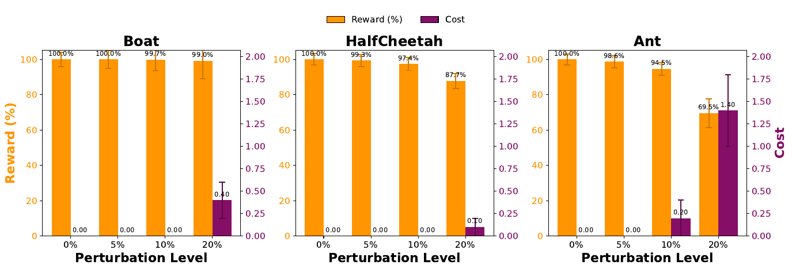
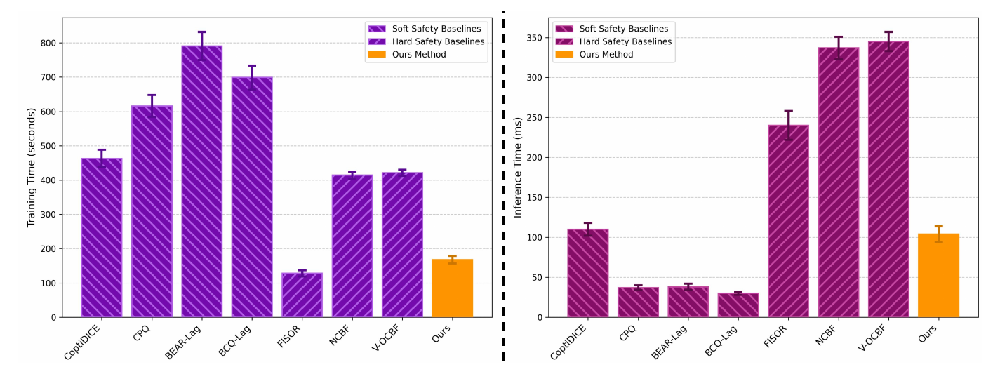

Offline reinforcement learning (RL) offers a promising framework for deploying autonomous systems in safety-critical settings without the risks of online exploration. However, learning policies that simultaneously achieve high performance and strong safety guarantees from fixed datasets remains a fundamental challenge. Many existing safe offline RL approaches typically rely on soft constraint formulations, which may permit safety violations and are sensitive to distributional shift. In contrast, formal methods such as Hamilton–Jacobi (HJ) reachability and Control Barrier Functions (CBFs) provide rigorous safety guarantees, but often yield overly conservative solutions, often neglecting performance. In this work, we bridge this gap by formulating safe offline RL as a state-constrained optimal control problem, where safety is enforced through hard state constraints and performance is captured via a reward function. The resulting value function satisfies a Hamilton–Jacobi–Bellman (HJB) equation, which we approximate using offline RL on fixed datasets by learning an epigraph feasibility value function and extracting policies via flow matching. This formulation enables principled integration of safety guarantees with data-driven policy optimization. Empirically, across safety-critical benchmarks including boat navigation, Safety-Gymnasium, and Bullet-Safety-Gym tasks, our approach achieves competitive returns while exhibiting near-zero constraint violations, demonstrating a favorable balance between safety and performance in the offline setting.
We model the environment as a state-constrained MDP with reward $r(x)$ and safety function $\ell(x)$, where the failure set is $\mathcal{F} = \{x \mid \ell(x) < 0\}$. Given only an offline dataset $\mathcal{D} = \{(x_t, a_t, r_t, \ell_t, x_{t+1})\}$, we seek the maximum achievable return subject to hard state-wise safety:
$$V(x) = \sup_\pi \Big[\sum_{k=0}^{\infty} \gamma^k r(x_k) \,\Big|\, x_0 = x\Big] \quad \text{s.t.}\quad x_t \notin \mathcal{F}\;\; \forall t \ge 0.$$Unlike penalty-based formulations, only policies whose trajectories never enter the failure set are feasible. To make this tractable, we use an epigraph reformulation: $V(x)$ is the largest performance threshold $z$ that remains feasible under the safety constraint,
$$V(x) = \sup\{z \in \mathbb{R} \mid \hat{V}(x,z) \ge 0\}, \qquad \hat{V}(x_t,z_t) = \sup_\pi \min\Big\{\sum_{k=t}^{\infty}\gamma^{k-t} r(x_k) - z_t,\; \min_{s\ge t}\gamma^{s-t}\ell(x_s)\Big\}.$$The epigraph feasibility value $\hat{V}(x,z)$ is non-negative iff some policy both achieves return at least $z$ and stays safe forever. The threshold evolves as $z_{t+1} = (z_t - r(x_t))/\gamma$, so the augmented state $(x, z)$ is Markov.

EpiFlow framework overview. From an offline dataset we learn the epigraph feasibility value function $\hat{V}_\theta(x,z)$, which, if it stays positive, keeps the system safe while maximizing reward. For each state we find the optimal performance budget $z^\star(x)$ and learn a flow-matching policy that optimizes $\hat{Q}$ at that budget, selecting the best path the offline data supports.
Why both parts? The recursion alone is structurally identical to a pure safety-value recursion, so with limited data a function approximator can collapse $\hat{V}(x,z)$ to a $z$-independent safety value $V_s(x)$. The decomposition bound injects explicit linear dependence on $z$ through $V_r(x) - z$, preventing this collapse. Part (i) pins the fixed point from below; part (ii) constrains it from above.
An action-conditional $\hat{Q}(x,z,a)$ is fitted on dataset transitions with target $\min\{\ell(x), \gamma \hat{V}_\theta(x', z')\}$, and distilled into $\hat{V}_\theta(x,z)$ via expectile regression ($\tau = 0.9$), which avoids querying out-of-distribution actions. The decomposition bound is enforced with a one-sided regularizer:
$$\mathcal{L}_{reg} = \mathbb{E}\Big[\max\big(0,\, \hat{V}_\theta(x,z) - \min\{V_r(x) - z,\, V_s(x)\}\big)\Big]$$giving the objective $\mathcal{L} = \mathcal{L}_{\hat{V}} + \lambda\,\mathcal{L}_{reg}$ with $\lambda = 0.25$.
For each state, the admissible performance budget $z^\star(x) = \sup\{z \mid \hat{V}_\theta(x,z) \ge 0\}$ is found by bisection (valid since $\hat{V}$ is non-increasing in $z$). Following Flow Q-Learning, a flow behavior teacher is distilled into a one-step actor trained with
$$\mathcal{L}_{\text{actor}} = \mathbb{E}\big[-\hat{Q}(x, z^\star(x), \mu_\omega(x,\eta))\big] + \alpha\, \mathcal{L}_{\text{distill}}$$The actor maximizes feasibility at the state-wise budget and needs only a single forward pass per action at deployment.

Feasibility epigraph value function $\hat{V}_\theta(x,z)$ on Boat Navigation. Top: without the decomposition regularizer, $\hat{V}_\theta$ is nearly insensitive to $z$. Bottom: with the regularizer ($\lambda = 0.25$), meaningful dependence on $z$ is restored, yielding distinct level sets consistent with the epigraph formulation.
We evaluate on Safe Boat Navigation (2D collision avoidance under nonlinear river drift), Safety-Gymnasium Safe Velocity (HalfCheetah, Hopper, Ant, Walker2D, Swimmer) and Safe Car Navigation (Goal, Push, Button), and eight Bullet-Safety-Gym Run/Circle tasks from the DSRL benchmark. We compare against soft-constraint methods (BCQ-Lag, BEAR-Lag, CPQ, COptiDICE, C2IQL) and state-wise safety methods based on HJ reachability and CBFs (FISOR, NCBF, V-OCBF), over 500 shared initial states and multiple training seeds.

Evaluation environments. Top-left: Boat Navigation with obstacles and a goal. Middle: Safe Velocity MuJoCo tasks (red sphere denotes an unsafe state). Bottom: Safe Car Navigation tasks with various obstacles and objectives.

Evaluation results. Points towards the left (←) are safer; points towards the top (↑) have higher reward. Evaluated over 500 episodes and 5 seeds (± std). EpiFlow (★) consistently sits in the desirable top-left region: Lagrangian methods favor reward at the cost of violations, while HJ/CBF safety filters stay safe but are conservative.
Normalized reward $R\uparrow$ and normalized cost $C\downarrow$ (DSRL protocol, cost limit $\kappa = 10$), mean ± std. Gray: unsafe ($C \ge 1$). Bold: highest reward among safe agents. “Ours” denotes EpiFlow.
Safety-Gym tabs cover Boat Navigation and Safety-Gymnasium (500 evaluation episodes, 5 seeds); bold is computed across both method groups. Bullet-Safety-Gym: 500 evaluation episodes, 3 seeds. On Bullet-Safety-Gym, C2IQL attains higher return on seven of eight tasks, but at the cost of non-zero violations.

Regularizer weight $\lambda$. Small $\lambda$ leaves $\hat{V}_\theta$ insensitive to $z$; large $\lambda$ drifts from the recursion objective. $\lambda = 0.25$ balances reward and cost.

Expectile $\tau$. $\tau = 0.5$ recovers the behavior value and is least safe; higher $\tau$ improves safety while keeping rewards competitive. We use $\tau = 0.9$ (100% safety rate on Boat).

Effect of $\lambda$ on the inferred budget $z^\star(x)$ for Boat Navigation ($\lambda = 0.1, 0.25, 0.5, 1.0$, left to right). As $\lambda$ increases, the feasible region contracts and $z^\star(x)$ becomes more conservative; purple marks infeasible states.

Robustness to action perturbations. Under Gaussian action noise of 5%, 10% and 20% of the action bound, safety costs rise only mildly at small-to-moderate noise; reward degrades notably only under aggressive perturbation.
Policy backbone (Boat). EpiFlow is agnostic to the generative model; flow matching gives the best return.
| Backbone | Reward | Cost |
|---|---|---|
| Flow Matching | −496.23 ±0.34 | 0.0 ±0.0 |
| Diffusion Model | −584.53 ±2.37 | 0.0 ±0.0 |
| Weighted BC | −716.60 ±5.23 | 18.56 ±4.45 |
Isolating the epigraph value. Keeping the flow-matching extractor but swapping in FISOR's reachability value (FISOR-FM) lowers return on 7 of 9 tasks and raises cost on 7 of 9, while still improving on FISOR, so both components contribute.

Computation time. Training time (left) and inference time (right) against all baselines (± std over 5 trials). EpiFlow stays on the low side of both, without needing extensive compute.
EpiFlow co-optimizes safety and performance in offline RL by casting state-constrained control as a tractable epigraph-based value synthesis problem: an epigraph feasibility value function is learned via a bounded Bellman recursion, and executable continuous-action policies are synthesized with flow matching while staying grounded in the offline data. The approach achieves consistently low safety violations on high-dimensional control tasks while maintaining competitive performance.
The learned policy is not formally verified, so guarantees remain empirical under function approximation. EpiFlow assumes deterministic dynamics; with stochastic transitions the worst-case successor needed by a robust epigraph recursion cannot be identified from a dataset that records one successor per transition. Future work will explore formal certification (e.g., Lipschitz-based verification, conformal prediction) and risk-aware extensions such as CVaR.
@inproceedings{tayal2026epiflow,
title={Bridging Safety and Performance in Offline Reinforcement Learning via Epigraph-Guided Flow Matching},
author={Tayal, Manan and Tayal, Mumuksh and Prakash, Ravi},
booktitle={Advances in Neural Information Processing Systems (NeurIPS)},
year={2026}
}